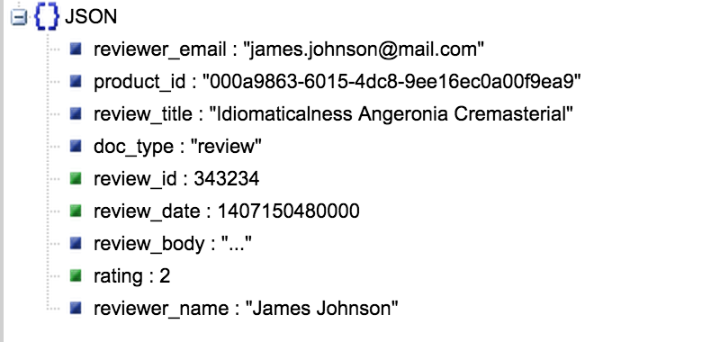

Getting Started with
NoSQL
- The problem with SQL
- History of NoSQL
- Database theories
- Modeling
- Patterns
The Problem with SQL
- Designed to run on large servers
- Built for Vertical Scaling
- Separated Models i.e. Tables
In Development
-
We assemble objects as a whole
- Cart
- Order
- Profile
- Product
-
Saving objects requires
- Deconstructing
- Multiple rows
- Multiple tables
Impedance Mistmatch
"The object-relational impedance mismatch is a set of conceptual and technical difficulties that are often encountered when a relational database management system (RDBMS) is being used by a program written in an object-oriented programming language or style, particularly when objects or class definitions are mapped in a straightforward way to database tables or relational schema." - Wikipedia

Google BigTable
Amazon DynamoDB
NoSQL
No SQL
Not only SQL

#nosql
What is NoSQL?
- non-relational
- cluster friendly
- generally open-source
- 21st century
- schema-less
Types of NoSQL Databases
- Key-Value: Redis, Riak, Memcached
- Column-family: Cassandra, HBase, BigTable
- Document: CouchDB, Couchbase, MongoDB
- Graph: Neo4J, Giraph, OrientD
Aggregates
// Order.cfc
component accessors="true"{
property="order_id" type="numeric";
property="order_date" type="date";
property="products" type="array";
property="user_id" type="numeric";
property="billing_address_1" type="string";
property="billing_address_2" type="string";
property="billing_city" type="string";
property="billing_region_code" type="string";
property="billing_postal_code" type="string";
property="billing_country_code" type="string";
property="shipping_address_1" type="string";
property="shipping_address_2" type="string";
property="shipping_city" type="string";
property="shipping_region_code" type="string";
property="shipping_postal_code" type="string";
property="shipping_country_code" type="string";
property="card_number" type="string";
property="expiration_month" type="numeric";
property="expiration_year" type="numeric";
}
// Order.cfc
component accessors="true"{
property="order_id" type="numeric";
property="order_date" type="date";
property="products" type="array";
property="user" type="User";
property="billing" type="Address";
property="shipping" type="Address";
property="cc_info" type="CreditCard";
}
Normalization
- Minimize data redundancy
- Structured models
- Logical queries
- Fast inserts / updates
- Less storage requirements
Denormalization
- Minimize JOINs
- Fast reads
- Repeated data
- More storage

Transaction Processing
ACID
- Atomicity
- Consistency
- Isolation
- Durability
BASE
- Basically Available
- Soft State
- Eventual Consistency
Atomic Transactions
Aggregate Orientated == NoSQL - Graph
Conflict Resolution
Consistency
Sharding vs. Replication
CAP Theorem
- Consistency
- Availability
- Partition Tolerance
You can only provide 2 of the 3

RDBMS Schemas
- Known Models
- Fixed Fields
- Data types
- Database managed
- Change can be difficult
NoSQL Schemas
- Any type of data
- Flexible
- Application managed
- Change is easy
Implicit Schema
Schema-less
Data / Entity
Relationship Modeling
- Conceptual Data Model
- Logical Data Model
- Physical Data Model
Conceptual Data Model
- Entity Names
- Entity Relationships
Modeling Notations

Conceptual Data Model
Logical Data Model
- Entity Names
- Entity Relationships
- Attributes
- Primary / Foreign Keys
Logical Data Model
Physical Data Model
- Entity -> Table Names
- Attributes -> Field Names
- Keys -> Primary / Foreign Keys
- Data Types
Physical Data Model
Physical Data Model in NoSQL
{
"user_id": 123,
"username": "jdoe",
"first_name": "John",
"last_name": "Doe",
"email": "john.doe@mail.com",
"password": "88142f883cba2b527fdbbc60a943b899"
}
type: object
properties:
_id:
type: string
description: The ID of the document
user_id:
type: integer
description: > An auto-incremented number from `users_counter`
that is the ID of the user
first_name:
type: string
description: The users first name
last_name:
type: string
description: The users last name
username:
type: string
description: A unique username chosen by the user
friends:
type: array
description: An array of user_id who the user is friends with
created_on:
type: integer
description: An epoch time in seconds when the user was created
Key Design
- Prefixing
- Predictable
- Counter ID
- Unpredictable
- Combinations
Prefixing
- user_123
- u::john.doe@mail.com
- user-123
- user_123_orders
- order_123
- o::john.doe@mail.com
- product-123
- user_123_orders
Predictable
Key: user_john.doe@mail.com
Key: user_jdoe
Counter ID
Key: user_123
Key: user_counter
Unpredictable
Key: 23ad6bac-7599-4874-af98-7af734027834
Combinations
- user_123_preferences
- user_jdoe_order_23ad6bac-7599-4874-af98-7af734027834
- user_john.doe@mail.com_comment_5664
Document Patterns
Lookup Pattern
Key: user_123
Key: user_john.doe@mail.com
Key: user_jdoe
Lookup Pattern for Auth
Key: user_123
Key: user_john.doe@mail.com_
88142f883cba2b527fdbbc60a943b899
Key: user_jdoe_
88142f883cba2b527fdbbc60a943b899
Embedding
Referring / Linking
Key: user_123
Key: user_456
Parent-Referencing
Key: product_000a9863-6015-4dc8-9ee16ec0a00f9ea9
Key: product_000a9863-6015-4dc8-9ee16ec0a00f9ea9_review_343234
FakeIt
Inspired by Swagger, fakeit is a CLI data generator based on YAML models that outputs JSON, YAML, CSON, or CSV formats
npm install fakeit -gFakeIt
- Generate fixed or random number of documents per model
- Event Transforms: Pre / Post Run, Pre / Post Build
- Data generation via FakerJS, ChanceJS, Custom or Static
- Data Typing
- Model Dependencies
- JSON, YAML, CSON, CSV output formats
- Output to File, Zip, Couchbase or Sync Gateway
name: Users
type: object
key: _id
data:
min: 200
max: 500
pre_run: >
globals.user_counter = 0;
properties:
id:
type: string
data:
post_build: "return 'user_' + this.user_id;"
type:
type: string
data:
value: "user"
user_id:
type: integer
data:
build: "return ++globals.user_counter;"
name:
type: string
data:
fake: "{{name.firstName}} {{name.lastName}}"
phone:
type: string
data:
build: "return chance.phone();"
created_on:
type: string
data:
fake: "{{date.past}}"
post_build: "return new Date(this.created_on).toISOString();"FakeIt Demo
Is SQL Going Away?
No
Considerations
- How do you work with your data?
- Do you work with the same aggregates all the time?
- What are you trying to achieve?
- Where are you starting at?
- Do you need finite data and highly complex relationships?
- Is the tabular structure working for you?
- Do you want to scale vertically or horizontally?
- Does your data need to be data centralized or decentralized?